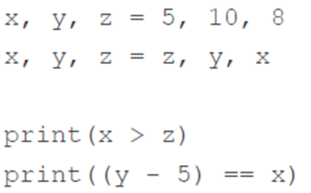

n = int(input())
print(n >= 100) 55FalseМета: освоїти роботу з логічними змінними, операторами розгалуження та операторами циклів
Перед виконанням лабораторної роботи необхідно опрацювати матеріал Лекції 4.
if, if-else, if-elif, else.while, while-else, for, for-else.range().break, continue у циклах.Використовуючи один з операторів порівняння в Python, напишіть просту дворядкову програму, яка приймає як вхідні дані параметр n, який є цілим числом, і друкує False, якщо n менше 100 і True, якщо n більше або дорівнює 100.
Не створюйте жодних блоків if. Протестуйте свій код, використовуючи дані, надані нижче.
Тестові дані
Приклад введення: 55
Очікуваний вивід: False
Приклад введення: 100
Очікуваний вивід: True
Приклад введення: -5
Очікуваний вивід: False
n = int(input())
print(n >= 100) 55Falsen = int(input())
print(n >= 100) 100Truen = int(input())
print(n >= 100) -5FalseНаписати програму визначення найбільшого з двох дійсних чисел, використовуючи констуркцію if-else.
# Введіть два дійсних числа
a = float(input("Введіть перше дійсне число: "))
b = float(input("Введіть друге дійсне число: "))
# Визначення найбільшого числа
if a > b:
print(f"Найбільше число: {a}")
else:
print(f"Найбільше число: {b}")Введіть перше дійсне число: 5
Введіть друге дійсне число: 3Найбільше число: 5.0if-else та if-elif-elseСпатифіллум, більш відомий як лілія світу або біле вітрило, є одним з найпопулярніших кімнатних рослин, що фільтрують шкідливі токсини з повітря. Деякі з токсинів, які він нейтралізує, включають бензол, формальдегід та аміак.
Уявіть, що ваша комп’ютерна програма любить ці рослини. Щоразу, коли вона отримує введення у вигляді слова Spathiphyllum, вона мимоволі вигукує в консоль наступний рядок: “Spathiphyllum is the best plant ever!”
Напишіть програму, яка використовує концепцію умовного виконання, приймає рядок як вхідні дані та:
Протестуйте свій код, використовуючи дані, які надано нижче.
Тестові дані
Приклад введення: spathiphyllum
Очікуваний вивід: No, I want a big Spathiphyllum!
Приклад введення: pelargonium
Очікуваний вивід: Spathiphyllum! Not pelargonium!
Приклад введення: Spathiphyllum
Очікуваний вивід: Yes - Spathiphyllum is the best plant ever!
# Введення рядка
plant = input("Введіть назву рослини: ")
# Умови
if plant == "Spathiphyllum":
print("Yes - Spathiphyllum is the best plant ever!")
elif plant == "spathiphyllum":
print("No, I want a big Spathiphyllum!")
else:
print(f"Spathiphyllum! Not {plant}!")Введіть назву рослини: spathiphyllumNo, I want a big Spathiphyllum!Жила-була земля – земля молока та меду, населена щасливими та заможними людьми. Звісно, люди платили податки – їх щастя мало межі. Найважливіший податок, так званий податок на доходи фізичних осіб (скорочено ПДФО), повинен був сплачуватись один раз на рік та оцінювався за таким правилом:
Він повинен приймати одне значення з плаваючою комою: дохід. Потім він має вивести розрахований податок, заокруглений до повних талерів. Є функція з ім’ям ound(), яка виконуватиме заокруглення за вас – ви знайдете її в скелетному коді нижче.
Примітка: ця щаслива країна ніколи не повертала своїм громадянам грошей. Якщо розрахований податок був меншим за нуль, це означало б тільки повну відсутність податку (податок дорівнював нулю). Врахуйте це під час розрахунків.
Подивіться на код нижче - він зчитує лише одне вхідне значення та виводить результат, тому вам потрібно завершити його деякими розумними обчисленнями.
Протестуйте свій код, використовуючи тестові дані, наведені нижче.
Тестові дані
Очикуваний вивод:
Приклад введення: 10000
Очікуваний вивід: The tax is: 1244.0 thalers
Приклад введення: 100000
Очікуваний вивід: The tax is: 19470.0 thalers
Приклад введення: 1000
Очікуваний вивід The tax is: 0.0 thalers
Приклад введення: -100
Очікуваний вивід The tax is: 0.0 thalers
# Замість input використовуємо фіксоване значення для тестування
income = 100000 # Ви можете змінити значення для тестування
# Розрахунок податку
if income <= 85528:
tax = income * 0.18 - 556.02
else:
tax = 14839.02 + (income - 85528) * 0.32
# Податок не може бути від'ємним
if tax < 0:
tax = 0
# Заокруглення податку
tax = round(tax, 0)
# Виведення результату
print("The tax is:", tax, "thalers")The tax is: 19470.0 thalersЯк ви, напевно, знаєте, з деяких астрономічних причин роки можуть бути високосними або звичайними. Перші тривають 366 днів, а другі – 365 днів.
З моменту введення григоріанського календаря (1582) для визначення року використовується наступне правило:
Подивіться на код у редакторі – він читає лише номер року і має бути доповнений інструкціями, що реалізують тест, який описаний вище.
Код має виводити одне з двох можливих повідомлень: Leap year або Common year, залежно від введеного значення.
Було б добре перевірити, чи належить введений рік до григоріанської ери, і вивести попередження інакше: Not within the Gregorian calendar period.
Підказка: використовуйте оператори != та %.
Протестуйте свій код, використовуючи надані нами дані.
Тестові дані
Приклад введення: 2000
Очікуваний вивід: Leap year
Приклад введення: 2015
Очікуваний вивід: Common year
Приклад введення: 1999
Очікуваний вивід: Common year
Приклад введення: 1996
Очікуваний вивід: Leap yea
Приклад введення: 1580
Очікуваний вивід: Not within the Gregorian calendar periodвивід
# Введення року
year = int(input("Enter a year: "))
# Перевірка чи належить рік до григоріанського календаря
if year < 1582:
print("Not within the Gregorian calendar period")
else:
# Перевірка на високосний рік
if year % 4 != 0:
print("Common year")
elif year % 100 != 0:
print("Leap year")
elif year % 400 != 0:
print("Common year")
else:
print("Leap year")Enter a year: 2004Leap yearwhileПриклад
Програма, яка читає послідовність чисел і підраховує, скільки чисел є парними, а скільки непарними. Програма завершується після введення нуля.
odd_numbers = 0
even_numbers = 0
# Read the first number.
number = int(input("Enter a number or type 0 to stop: "))
# 0 terminates execution.
while number != 0:
# Check if the number is odd.
if number % 2 == 1:
# Increase the odd_numbers counter.
odd_numbers += 1
else:
# Increase the even_numbers counter.
even_numbers += 1
# Read the next number.
number = int(input("Enter a number or type 0 to stop: "))
# Print results.
print("Odd numbers count:", odd_numbers)
print("Even numbers count:", even_numbers)Enter a number or type 0 to stop: 0Odd numbers count: 0
Even numbers count: 0Виход із циклу може бути оптімізовано за рахунок використання змінної counter наступним чином.
counter = 5
while counter:
print("Inside the loop.", counter)
counter -= 1
print("Outside the loop.", counter)Inside the loop. 5
Inside the loop. 4
Inside the loop. 3
Inside the loop. 2
Inside the loop. 1
Outside the loop. 0Молодший чарівник вибрав таємне число. Він сховав його в змінну з ім’ям secret_number. Він хоче, щоб кожен, хто запускає його програму, грав у гру Вгадай секретний номер і вгадав, яке число він вибрав для них. Ті, хто не вгадає число, назавжди застрянуть у нескінченній петлі! На жаль, він не знає, як завершити код.
Ваше завдання допомогти фокуснику доповнити код у редакторі таким чином, щоб код:
while;"Ха-ха! Ви застрягли у моїй петлі!" і отримати запит на повторне введення числа. Якщо число, введене користувачем, співпадає з числом, вибраним фокусником, число має бути надруковане на екрані, і фокусник повинен вимовити наступне слово: «Молодець, магле! Тепер ти вільний».Чарівник розраховує на Вас! Не розчаровуйте його.
ДОДАТКОВА ІНФОРМАЦІЯ
До речі, подивитесь на функцію print(). Те, як ми це використовували тут, називається багаторядковим друком. Ви можете використовувати три кавички для друку рядка в кількох рядках, щоб текст був легшим для читання, або для створення спеціального текстового дизайну. Поекспериментуйте з цим.
#secret_number = 777
print(
"""
+================================+
| Welcome to my game, muggle! |
| Enter an integer number |
| and guess what number I've |
| picked for you. |
| So, what is the secret number? |
+================================+
""")
+================================+
| Welcome to my game, muggle! |
| Enter an integer number |
| and guess what number I've |
| picked for you. |
| So, what is the secret number? |
+================================+
# Секретне число
secret_number = 777
# Привітання
print(
"""
+================================+
| Welcome to my game, muggle! |
| Enter an integer number |
| and guess what number I've |
| picked for you. |
| So, what is the secret number? |
+================================+
""")
# Цикл для введення числа
while True:
user_guess = int(input("Enter your guess: ")) # Користувач вводить число
if user_guess == secret_number:
print("Well done, muggle! Now you are free.")
break # Вихід з циклу, якщо число правильне
else:
print("Ha-ha! You're stuck in my loop!")
+================================+
| Welcome to my game, muggle! |
| Enter an integer number |
| and guess what number I've |
| picked for you. |
| So, what is the secret number? |
+================================+
Enter your guess: 500Ha-ha! You're stuck in my loop!Enter your guess: 777Well done, muggle! Now you are free.forВи знаєте, що таке Міссісіпі? Ну, це назва одного зі штатів та річок у Сполучених Штатах. Довжина річки Міссісіпі становить близько 2340 миль, що робить її другою за довжиною річкою у Сполучених Штатах (найдовшою з них є річка Міссурі). Це так багато, що одній краплі води потрібно 90 днів, щоб пройти весь її шлях!
Слово Міссісіпі також використовується для дещо іншої мети: для рахунку Міссісіпі.
Якщо ви не знайомі з цією фразою, ми можемо пояснити вам, що вона означає: вона використовується для підрахунку секунд.
Ідея полягає в тому, що додавання слова Міссісіпі до числа при підрахунку секунд вголос змушує рахунок бути хронологічно точніше, і, отже, вимова “один Міссісіпі, два Міссісіпі, три Міссісіпі” займе приблизно три секунди! Рахунок Міссісіпі часто використовують діти, які грають у хованки, щоб переконатися, що той, хто шукає чесно, підраховує час.
Ваше завдання тут дуже просте: напишіть програму, яка використовує цикл for для «рахунку Міссісіпі» до п’яти. Порахувавши до п’яти, програма повинна вивести на екран фінальне повідомлення "Ready or not, here I come!"
Використовуйте код, який ми надали у редакторі.
ДОДАТКОВА ІНФОРМАЦІЯ
Зверніть увагу, що код редактора містить два елементи, які можуть бути наразі вам не зовсім зрозумілі: оператор import time і метод sleep(). Ми незабаром про них поговоримо.
Наразі ми просто хотіли, щоб ви знали, що ми імпортували модуль time і використовували метод sleep() для припинення виконання кожної наступної функції print() всередині циклу for на одну секунду, щоб повідомлення, яке виводиться на консоль, було схоже на фактичний підрахунок.
import time # Імпорт модуля time для використання функції sleep
# Цикл for, який рахує до п'яти
for i in range(1, 6): # Цикл починається з 1 і закінчується на 5
print(i, "Mississippi") # Виведення номера і слова "Mississippi"
time.sleep(1) # Затримка на одну секунду між ітераціями
# Фінальне повідомлення після циклу
print("Ready or not, here I come!")1 Mississippi
2 Mississippi
3 Mississippi
4 Mississippi
5 Mississippi
Ready or not, here I come!break і continueОператор break використовується для завершення/виходу з циклу.
Розробте програму, яка використовує цикл while і постійно просить користувача ввести слово, якщо користувач не вводить "chupacabra" як секретне вихідне слово, і в цьому випадку повідомлення "You've successfully left the loop." має бути виведений на екран, а цикл має завершитись.
Не друкуйте жодне із введених користувачем слів. Використовуйте концепцію умовного виконання та інструкцію break.
while True: # Нескінченний цикл
user_input = input("Enter a word: ") # Введення слова користувачем
if user_input == "chupacabra": # Перевірка, чи це секретне слово
print("You've successfully left the loop.") # Виведення повідомлення
break # Завершення циклуEnter a word: chupacabraYou've successfully left the loop.Оператор continue використовується для пропуску поточного блоку та переходу до наступної ітерації без виконання операторів усередині циклу.
Його можна використовувати з циклами while та for.
Ваше завдання тут особливе: Ви повинні створити пожирача голосних! Напишіть програму, яка використовує:
for;if-elif-else)continue.Ваша програма повинна:
user_word = user_word.upper(), щоб перетворити слово, введене користувачем, у верхній регістр; ми поговоримо про рядкові методи та метод upper() у наступних лекціях;continue, щоб “з’їсти” наступні голосні A, E, I, O, U у введеному слові;Протестуйте свою програму з даними, які надані нижче.
Тестові дані
Зразкове введення: Gregory
Очікуваний вивід:
G
R
G
R
Y
Зразкове введення: abstemious
Очікуваний вивід:
B
S
T
M
S
Зразкове введення: IOUEA
Очікуваний вивід:
# Запитуємо користувача ввести слово
user_word = input("Enter a word: ")
user_word = user_word.upper() # Перетворюємо слово у верхній регістр
# Цикл for, що проходить через кожну літеру слова
for letter in user_word:
if letter in "AEIOU": # Перевірка, чи є літера голосною
continue # Пропускаємо голосні і переходимо до наступної ітерації
print(letter) # Виводимо на екран літери, які не є голоснимиEnter a word: kyryloK
Y
R
Y
LВаше завдання тут ще особливіше, ніж раніше: Ви повинні переробити (потворного) пожирача голосних із попереднього завдання і створити кращого, покращеного (красивого) пожирача голосних! Напишіть програму, яка використовує:
for;if-elif-else)continue.Ваша програма повинна:
user_word = user_word.upper(), щоб перетворити слово, введене користувачем, у верхній регістр; * використовувати умовне виконання та оператор continue , щоб “з’їсти” наступні голосні A, E, I, O, U від введеного слова;word_without_vowels та вивести змінну на екран.Подивіться код нижче. Ми створили word_without_vowels і надали йому порожній рядок. Використовуйте операцію конкатенації, щоб попросити Python об’єднати вибрані літери у довший рядок у наступних ітераціях циклу та призначити її змінною word_without_vowels.
Протестуйте свою програму з даними, які ми надали.
Тестові дані
Зразкове введення:Gregory
Очікуваний вивід:
GRGRY
Зразкове введення: abstemious
Очікуваний вивід:
BSTMS
Зразкове введення: IOUEA
Очікуваний вивід:
word_without_vowels = "" # Ініціалізуємо порожній рядок для зберігання нез'їдених літер
# Запитуємо користувача ввести слово
user_word = input("Enter a word: ")
user_word = user_word.upper() # Перетворюємо слово у верхній регістр
# Цикл for, що проходить через кожну літеру слова
for letter in user_word:
if letter in "AEIOU": # Перевірка, чи є літера голосною
continue # Пропускаємо голосні і переходимо до наступної ітерації
word_without_vowels += letter # Додаємо нез'їдену літеру до нового рядка
# Виводимо на екран слово без голосних
print(word_without_vowels)Enter a word: kyryllooKYRYLLПослухайте цю історію: хлопчик та його батько, програміст, грають із дерев’яними кубиками. Вони будують піраміду (рис. 1).
Їхня піраміда трохи дивна, тому що насправді це стіна у формі піраміди – вона плоска. Піраміда складається за одним простим принципом: кожен нижній шар містить на один блок більше, ніж шар вище.
На рис. 1 показано правило, що використовується будівельниками:

Ваше завдання – написати програму, яка зчитує кількість блоків, що є у будівельників, та виводить висоту піраміди, яку можна побудувати з цих блоків.
Примітка: висота вимірюється кількістю повністю завершених шарів –- якщо будівельники не мають достатньої кількості блоків та не можуть завершити наступний шар, вони негайно закінчують свою роботу.
Протестуйте свій код, використовуючи надані нами дані.
Тестові дані
Зразкове введення: 6
Очікуваний вивід: The height of the pyramid: 3
Зразкове введення: 20
Очікуваний вивід: The height of the pyramid: 5
Зразкове введення: 1000
Очікуваний вивід: The height of the pyramid: 44
Зразкове введення: 2
Очікуваний вивід: The height of the pyramid: 1
# Зчитуємо кількість блоків від користувача
blocks = int(input("Enter the number of blocks: "))
height = 0 # Ініціалізуємо висоту піраміди
current_layer = 1 # Ініціалізуємо кількість блоків для поточного шару
# Цикл для обчислення висоти піраміди
while blocks >= current_layer:
blocks -= current_layer # Віднімаємо кількість блоків, які потрібні для поточного шару
height += 1 # Збільшуємо висоту піраміди на 1
current_layer += 1 # Збільшуємо кількість блоків для наступного шару
# Виводимо результат
print("The height of the pyramid:", height)Enter the number of blocks: 6The height of the pyramid: 31937 року німецький математик Лотар Коллатц сформулював інтригуючу гіпотезу (вона досі не доведена), яку можна описати так:
c0;c0 як c0÷2;c0як 3 × c0 + 1;c0 ≠ 1, поверніться до пункту 2.Гіпотеза свідчить, що незалежно від початкового значення c0 воно завжди дорівнюватиме 1.
Звичайно, використання комп’ютера для доведення гіпотези для будь-якого натурального числа – надзвичайно складне завдання (для цього може знадобитися навіть штучний інтелект), але ви можете використовувати Python для перевірки деяких окремих чисел. Можливо, Ви навіть знайдете те, що спростує гіпотезу.
Напишіть програму, яка зчитує одне натуральне число і виконує вказані вище кроки до тих пір, поки c0 залишається відмінним від 1. Ми також хочемо, щоб ви підрахували кроки, необхідні для досягнення мети. Ваш код також повинен виводити усі проміжні значення c0.
Підказка: найважливіша частина проблеми –- як перетворити ідею Коллатца на цикл while – це ключ до успіху.
Протестуйте свій код, використовуючи надані нами дані.
Тестові дані
Приклад введення: 15
Очікуваний вивід:
46
23
70
35
106
53
160
80
40
20
10
5
16
8
4
2
1
steps = 17
Приклад введення: 16
Очикуваний вивід:
8
4
2
1
steps = 4
Приклад введення: 1023
Очікуваний вивід:
3070
1535
4606
2303
6910
3455
10366
5183
15550
7775
23326
11663
34990
17495
52486
26243
78730
39365
118096
59048
29524
14762
7381
22144
11072
5536
2768
1384
692
346
173
520
260
130
65
196
98
49
148
74
37
112
56
28
14
7
22
11
34
17
52
26
13
40
20
10
5 16
8
4
2
1
steps = 62
# Зчитуємо натуральне число
c0 = int(input("Enter a natural number: "))
steps = 0 # Ініціалізуємо лічильник кроків
# Цикл для реалізації гіпотези Коллатца
while c0 != 1:
print(c0) # Виводимо поточне значення c0
if c0 % 2 == 0: # Якщо c0 парне
c0 //= 2 # Ділимо c0 на 2
else: # Якщо c0 непарне
c0 = 3 * c0 + 1 # Обчислюємо нове c0
steps += 1 # Збільшуємо лічильник кроків
# Виводимо останнє значення c0 (яке дорівнює 1) та загальну кількість кроків
print(c0)
print("steps =", steps)Enter a natural number: 1515
46
23
70
35
106
53
160
80
40
20
10
5
16
8
4
2
1
steps = 17Виконати завдання 1-12 наведені вище у цьому зошиті.
Створити файл lab_4_StudentLastName.py з написаним кодом.
Закомітити файл у локальний репозиторій.
Відправити (“запушити”) поточну версію Git-проєкта у віддалений репозиторій на GitHub.
Звіт має складатися з файлу (за основу взяти цей Python-зошит) lab_4_StudentLastName.ipynb. (Можливі якісь додакові файли)
Який вивод наступного фрагмента? 
Який вивод наступного фрагмента? 
Який вивод наступного фрагмента? 
x = 5
y = 10
z = 8
print(x > y)
print(y > z)False
TrueПояснення:
Цей код виконує прості математичні порівняння і виводить результати на екран. Давайте розглянемо кожну частину коду по черзі:
x = 5, y = 10, z = 8:
x, y і z.x стає рівним 5, y - 10, а z - 8.print(x > y):
x більше за число y.> означає “більше ніж”.x) не більше 10 (значення y), вираз x > y є хибним.print() виводить на екран слово False (хиба).print(y > z):
y більше за число z.y) більше 8 (значення z), вираз y > z є правильним.print() виводить на екран слово True (правда).x, y, z = 5, 10, 8
print(x > z)
print(y - 5 == x)False
TrueПояснення виводу:
False: Означає, що x не більше за z.
True: Означає, що різниця між y і 5 дорівнює x.
x, y, z = 5, 10, 8
x, y, z = z, y, x
print(x > z)
print(y - 5 == x)True
FalseПояснення: 1. x, y, z = 5, 10, 8:
x стає рівним 5y стає рівним 10z стає рівним 8x, y, z = z, y, x:
x стає рівним попередньому значенню z, тобто 8y залишається незмінним і дорівнює 10z стає рівним попередньому значенню x, тобто 5print(x > z):
x (яке тепер дорівнює 8) більше за нове значення z (яке тепер дорівнює 5).x > z є істинним.print() виведе на екран True (істина).print(y - 5 == x):
y - 5, тобто 10 - 5 = 5.x (яке тепер дорівнює 8).y - 5 == x є хибним.print() виведе на екран False (хиба).